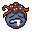
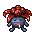
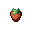
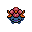

Pokédex / #044

Gloom #044
GrassPoison
Its pistils exude an incredibly foul odor. The horrid stench can cause fainting at a distance of 1.25 miles.
Generation 1 · Kanto

Stats
| Attack | 65 | |
|---|---|---|
| Defense | 70 | |
| Sp. Atk | 85 | |
| Sp. Def | 75 |
In the wild
| Wild level | 18–28 |
|---|---|
| HP | 60 |
| Experience | 10 |
| Egg groups | Grass |
Evolution
Moves
| Level | Move | Type | Category | Power | Energy | Cooldown | Effect | |
|---|---|---|---|---|---|---|---|---|
| 1 | Tackle | Normal | Physical | 15 | 15 | 1s | Tackle is one of the most common and basic moves a Pokemon learns. It deals damage with no additional effects. | |
| 5 | Absorb | Grass | Special | 20 | 35 | 5s | Absorb deals damage and the user will recover 50% of the HP drained. | |
| 10 | Acid | Poison | Special | 40 | 40 | 6s | Acid deals damage and has a 10% chance of lowering the target's Special Defense by one stage. | |
| 15 | Poison Powder | Poison | Status | – | 30 | 20s | Poison Powder poisons the target. | |
| 20 | Stun Spore | Normal | Status | – | 55 | 10s | Stun Spore paralyzes the target. | |
| 25 | Mega Drain | Grass | Special | 40 | 65 | 12s | Mega Drain inflicts damage, and 50% of the damage dealt to the target is restored to the user. The amount of HP recovered is always rounded down. | |
| 35 | Acid Spray | Poison | Special | 40 | 55 | 9s | Acid Spray inflicts damage and lowers the target's Special Defense by two stages. | |
| 40 | Moonlight | Fairy | Status | – | 120 | 120s | Moonlight restores the user's current HP based on the weather conditions and time of day. Normal conditions will restore ½ of the total HP. | |
| 45 | Sleep Powder | Normal | Status | – | 85 | 100s | Sleep Powder puts the target to sleep. |
Field abilities
Cut
Special abilities
Chlorophyll
Egg moves
After YouCharmFlailIngrainNature PowerRazor LeafSecret PowerSynthesisTeeter DanceTickle
Technical machines
BideBullet SeedDouble EdgeDouble TeamDrain PunchEnergy BallGiga DrainMega DrainMimicRageReflectRestSludge BombSolar BeamSubstituteSwords DanceTake DownToxic
Drops
| Item | Amount | Chance | |
|---|---|---|---|
| seed | 1–10 | 89.3% | |
| leaf | 1 | 34.7% | |
| gracidea | 1 | 23.1% | |
| revival herb | 1 | 23.1% | |
 | strawberry | 1–3 | 5% |
 | gloom doll | 1 | 0.1% |
| Meadow Plate | 1 | 0.025% | |
| Toxic Plate | 1 | 0.025% | |
| TM 20 | 1 | 0.005% |